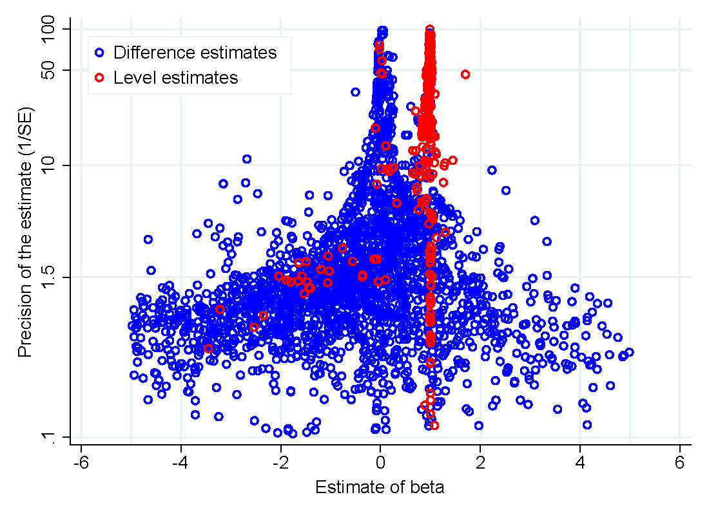

A key theoretical prediction in financial economics is that under risk neutrality and rational expectations a currency's forward rates should form unbiased predictors of future spot rates. Yet scores of empirical studies report negative slope coefficients from regressions of spot rates on forward rates, which is inconsistent with the forward rate unbiasedness hypothesis. We collect 3,643 estimates from 91 research articles and using recently developed techniques investigate the effect of publication and misspecification biases on the reported results. Correcting for these biases we estimate the slope coefficients of 0.31 and 0.98 for developed and emerging currencies respectively, which implies that empirical evidence is in line with the theoretical prediction for emerging economies and less puzzling than commonly thought for developed economies. Our results also suggest that the coefficients are systematically influenced by the choice of data, numeraire currencies, and estimation methods.
Fig: Positive estimates are underreported

Reference: Diana Zigraiova, Tomas Havranek, and Jiri Novak (2021), "How Puzzling Is the Forward Premium Puzzle? A Meta-Analysis." European Economic Review 134, 103714.